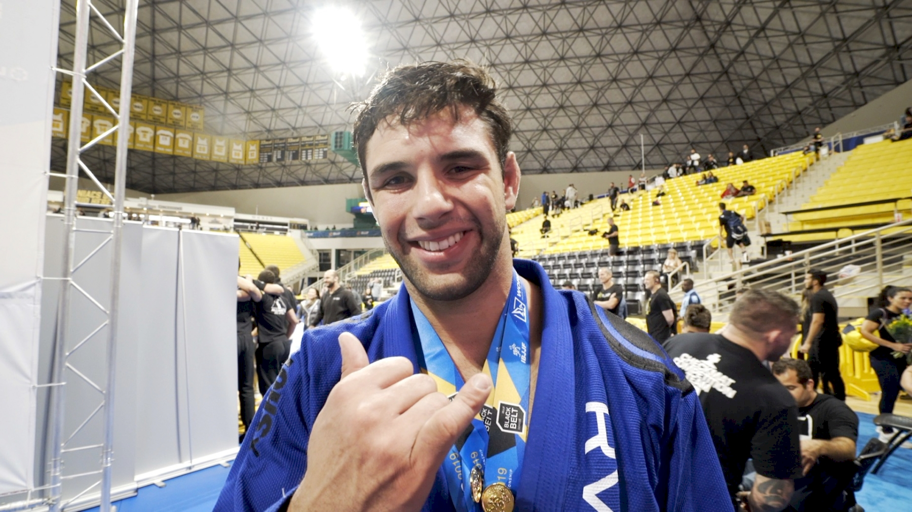
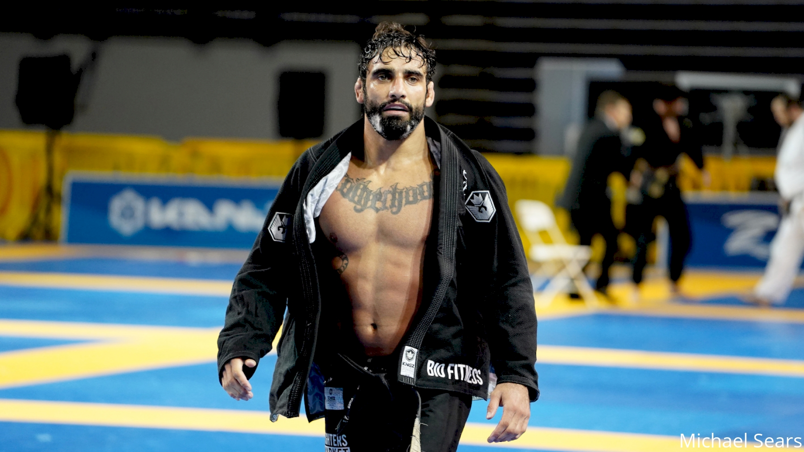
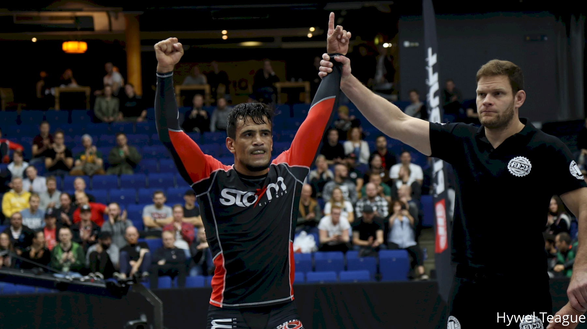

Recognition
It is a very male dominated sport, only as of the recent times has the women's division flourished and bloomed. It is important to recognize how far this martial art has come and how far it will. Empowered women empower women, especially in the Brazilian Jiu-jitsu community.
Seasoned Champions - Gi

Marcus Buchecha Almeida-
Marcus "Buchecha" Almeida is one of the best perfoming Brazilian Jiu-jitsu athletes of all time. his W-L-D ratio is 137-13-1.He has both competed in Gi and no Gi

Leandro "Lenda" Lo was one of the best Brazilian Jiu-jitsu athletes of all time. He was a champion in four different weight categories within a single year. His W-L-D is 271-43-6. Unfortunately he passed away the 8th of August 2022, due to gunshot wound. May he rest in peace.
